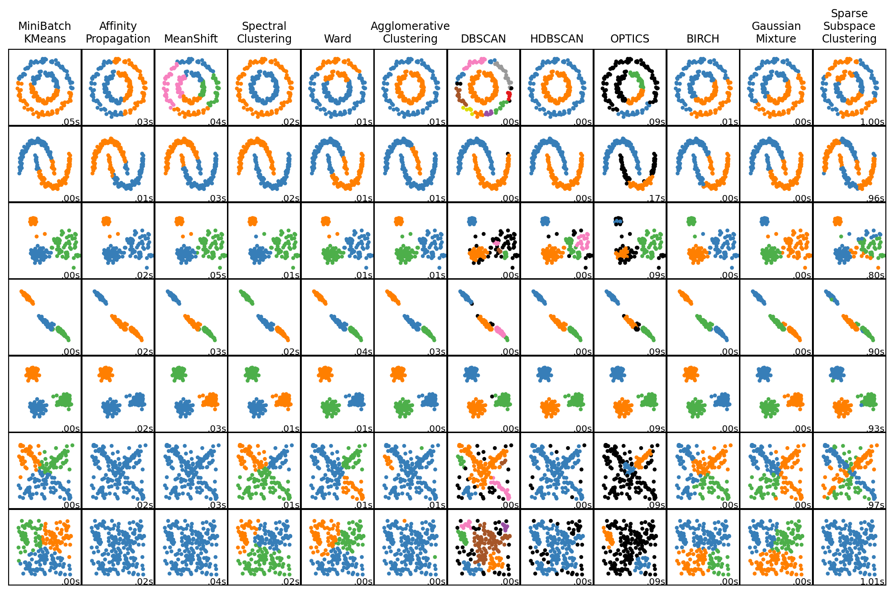
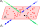

In which we overview common tasks and models for clustering. Includes an exploration of spectral clustering and sparse subspace clustering, and an implementation of the latter.
Published
December 2, 2023
Clustering
Falling within the realm of unsupervised learning, this task deals with unlabeled but adequately distinct data. While both it and classification involve modeling such differences, clustering in particular starts with no prior informaiton about data labels. In cases where partial label information is known, the task is instead considered to be semi-supervised.
The common goal of clustering is to separate data into clusters - groups such that data within them is similar and between them is different. What this means precisely depends on the measure of similarity used; for raw Euclidean distances it would mean that clusters are far apart literally, whereas for feature embedding spaces they would be apart semantically/conceptually.
Clustering serves a variety of purposes:
Understanding: separating data into distinct groups may reveal patterns and highlight important features. Additionally, clustering may be viewed as a form of divide-and-conquer where the clusters may be easier to analyze in isolation.
Preprocessing: similar to the above, the benefit of being able to analyze data separately can be extended to programmatic solutions. That is, cluster assignment can be used to split data and train models separately for each.
Anomaly detection: the above would additionally get rid of outliers as they wouldn’t belong to any cluster. This makes clustering applicable to anomaly detection as it can identify points that are distant from all other data.
Clustering in itself isn’t a method but a task. A plethora of algorithms exist to perform it, thanks to various relevant considerations about the type of clustered data:
Shape: while we may typically think of clusters as circular-like objects, they may instead be stretched, spread out, stretched out, bent, etc. For the stretched out type, it additionally becomes important whether data exhibits linear relationships or otherwise lies in nonlinear manifolds.
Data type: the same considerations from other tasks in machine learning apply: is the data numerical or categorical, are any transforms applicable, is some of the data images/audio/text/etc?
Dimensionality: for more complex data types, preprocessing or embedding may be in order. High-dimensional data in general poses a challenge due to the curse of dimensionality, a phenomenon where regular measures of distance break down and lose meaning. In some circumstances it thus becomes crucial to use methods specifically designed around high-dimensional data.
Examples
To illustrate the former consideration particularly, we can take a look at some distinct sets of artificial data and the performances of various clustering algorithms. Here’s a pretty nice visualization of some common algorithms:
import timeimport warningsfrom itertools import cycle, isliceimport matplotlib.pyplot as pltimport numpy as npfrom sklearn import cluster, datasets, mixturefrom sklearn.neighbors import kneighbors_graphfrom sklearn.preprocessing import StandardScalerfrom ssc import linear, SparseSubspaceClustering# ============# Generate datasets. We choose the size big enough to see the scalability# of the algorithms, but not too big to avoid too long running times# ============n_samples =200seed =5805noisy_circles = datasets.make_circles( n_samples=n_samples, factor=0.5, noise=0.05, random_state=seed)noisy_moons = datasets.make_moons(n_samples=n_samples, noise=0.05, random_state=seed)blobs = datasets.make_blobs(n_samples=n_samples, random_state=seed)rng = np.random.RandomState(seed)no_structure = rng.rand(n_samples, 2), None# Anisotropicly distributed datarandom_state =5805X, y = datasets.make_blobs(n_samples=n_samples, random_state=random_state)transformation = [[0.6, -0.6], [-0.4, 0.8]]X_aniso = np.dot(X, transformation)aniso = (X_aniso, y)# blobs with varied variancesvaried = datasets.make_blobs( n_samples=n_samples, cluster_std=[1.0, 2.5, 0.5], random_state=random_state)# ============# Set up cluster parameters# ============plt.figure(figsize=(10.5, 6.5))plt.subplots_adjust( left=0.02, right=0.98, bottom=0.001, top=0.95, wspace=0.01, hspace=0.01)plot_num =1default_base = {"quantile": 0.3,"eps": 0.3,"damping": 0.9,"preference": -200,"n_neighbors": 3,"n_clusters": 3,"min_samples": 7,"xi": 0.05,"min_cluster_size": 0.1,"allow_single_cluster": True,"hdbscan_min_cluster_size": 15,"hdbscan_min_samples": 3,"random_state": 42,}datasets = [ ( noisy_circles, {"damping": 0.77,"preference": -240,"quantile": 0.2,"n_clusters": 2,"min_samples": 7,"xi": 0.08, }, ), ( noisy_moons, {"damping": 0.75,"preference": -220,"n_clusters": 2,"min_samples": 7,"xi": 0.1, }, ), ( varied, {"eps": 0.18,"n_neighbors": 2,"min_samples": 7,"xi": 0.01,"min_cluster_size": 0.2, }, ), ( aniso, {"eps": 0.15,"n_neighbors": 2,"min_samples": 7,"xi": 0.1,"min_cluster_size": 0.2, }, ), (blobs, {"min_samples": 7, "xi": 0.1, "min_cluster_size": 0.2}), (linear, {}), (no_structure, {}),]for i_dataset, (dataset, algo_params) inenumerate(datasets):# update parameters with dataset-specific values params = default_base.copy() params.update(algo_params) X, y = dataset# normalize dataset for easier parameter selection X = StandardScaler().fit_transform(X)# estimate bandwidth for mean shift bandwidth = cluster.estimate_bandwidth(X, quantile=params["quantile"])# connectivity matrix for structured Ward connectivity = kneighbors_graph( X, n_neighbors=params["n_neighbors"], include_self=False )# make connectivity symmetric connectivity =0.5* (connectivity + connectivity.T)# ============# Create cluster objects# ============ ms = cluster.MeanShift(bandwidth=bandwidth, bin_seeding=True) two_means = cluster.MiniBatchKMeans( n_clusters=params["n_clusters"], n_init="auto", random_state=params["random_state"], ) ward = cluster.AgglomerativeClustering( n_clusters=params["n_clusters"], linkage="ward", connectivity=connectivity ) spectral = cluster.SpectralClustering( n_clusters=params["n_clusters"], eigen_solver="arpack", affinity="nearest_neighbors", random_state=params["random_state"], ) dbscan = cluster.DBSCAN(eps=params["eps"]) hdbscan = cluster.HDBSCAN( min_samples=params["hdbscan_min_samples"], min_cluster_size=params["hdbscan_min_cluster_size"], allow_single_cluster=params["allow_single_cluster"], ) optics = cluster.OPTICS( min_samples=params["min_samples"], xi=params["xi"], min_cluster_size=params["min_cluster_size"], ) affinity_propagation = cluster.AffinityPropagation( damping=params["damping"], preference=params["preference"], random_state=params["random_state"], ) average_linkage = cluster.AgglomerativeClustering( linkage="average", metric="cityblock", n_clusters=params["n_clusters"], connectivity=connectivity, ) birch = cluster.Birch(n_clusters=params["n_clusters"]) gmm = mixture.GaussianMixture( n_components=params["n_clusters"], covariance_type="full", random_state=params["random_state"], ) ssc = SparseSubspaceClustering( n_clusters=params["n_clusters"], ) clustering_algorithms = ( ("MiniBatch\nKMeans", two_means), ("Affinity\nPropagation", affinity_propagation), ("MeanShift", ms), ("Spectral\nClustering", spectral), ("Ward", ward), ("Agglomerative\nClustering", average_linkage), ("DBSCAN", dbscan), ("HDBSCAN", hdbscan), ("OPTICS", optics), ("BIRCH", birch), ("Gaussian\nMixture", gmm), ("Sparse\nSubspace\nClustering", ssc), )for name, algorithm in clustering_algorithms: t0 = time.time()# catch warnings related to kneighbors_graph, subspace clusteringwith warnings.catch_warnings(): warnings.filterwarnings("ignore", message="the number of connected components of the "+"connectivity matrix is [0-9]{1,2}"+" > 1. Completing it to avoid stopping the tree early.", category=UserWarning, ) warnings.filterwarnings("ignore", message="Graph is not fully connected, spectral embedding"+" may not work as expected.", category=UserWarning, ) warnings.filterwarnings("ignore", message="Solution may be inaccurate. Try another solver,"+" adjusting the solver settings, or solve with"+" verbose=True for more information.", category=UserWarning, ) algorithm.fit(X) t1 = time.time()ifhasattr(algorithm, "labels_"): y_pred = algorithm.labels_.astype(int)else: y_pred = algorithm.predict(X) plt.subplot(len(datasets), len(clustering_algorithms), plot_num)if i_dataset ==0: plt.title(name, size=9) colors = np.array(list( islice( cycle( ["#377eb8","#ff7f00","#4daf4a","#f781bf","#a65628","#984ea3","#999999","#e41a1c","#dede00", ] ),int(max(y_pred) +1), ) ) )# add black color for outliers (if any) colors = np.append(colors, ["#000000"]) plt.scatter(X[:, 0], X[:, 1], s=5, color=colors[y_pred]) plt.xlim(-2.5, 2.5) plt.ylim(-2.5, 2.5) plt.xticks(()) plt.yticks(()) plt.text(0.99,0.01, ("%.2fs"% (t1 - t0)).lstrip("0"), transform=plt.gca().transAxes, size=7.5, horizontalalignment="right", ) plot_num +=1plt.show()

Figure 1: A comparison of various clustering methods.
Whoa, that’s a lot of them! If you’ve seen this image before and are particularly observant, you may notice that I threw in an extra algorithm (rightmost column) and a dataset (second-bottom row) - more on those later.
Each of the above algorithms is deserving of a post of its own. Here, I will just briefly focus on one, which happens to be the only showcased algorithm that properly clusters the top 5 datasets:
Spectral Clustering
Yes, spectral as in spectrum - i.e., eigenvalues. I found out about this algorithm back when I was taking intro to linear algebra, and it really stuck with me precisely because it gives a pretty neat interpretation of eigenvalues (which at the time I had a really hard time exemplifying).
We start with a similarity matrix\(S\), where the \(ij\)-th value denotes the similarity of data points indexed \(i\) and \(j\). What constitutes as being similar may vary; the example in Figure 1 simply uses Euclidean distance. We then use \(S\) to construct a similarity graph, a weighted graph with weights \(w_{i,j} = s_{i,j}\) if they are past a certain threshold and \(0\) (no edge) otherwise. This graph’s weighted adjacency matrix\(W\) is essentially \(S\) with all sub-threshold values zeroed out. Assuming data from \(k\) sufficiently distinct clusters is ordered by cluster, the adjacency matrix may look something like \[
W = \begin{bmatrix} W_1 & & & \\ & W_2 & & \\ & & \ddots & \\ & & & W_k \end{bmatrix}\ ,
\tag{1}\]
which you may recognize as a block diagonal matrix.
So, what role do eigenvalues play here? Turns out, if \(v\) is an eigenvalue of \(W_1\), then the same \(v\) padded by a bunch of zeros at the bottom is an eigenvalue of \(W\). You can verify this via Equation 1; \(W_1 v = v \lambda\) necessarily implies \(W \begin{bmatrix} v \\ 0 \end{bmatrix} = \begin{bmatrix} v \\ 0 \end{bmatrix} \lambda\). The same applies for eigenvectors of any cluster, they just need to placed appropriately to act on their cluster’s similarity block \(W_i\). As such, the eigenvalues of \(W\) will be grouped according to cluster, having zero values in all other locations. Finding these eigenvalues would then reveal the clusters.
Well… sort of. In reality, we still have some problems: the eigenvalues can have small/zero entries, and finding all \(n\) eigenvalues is just too difficult. Instead, we define \(D\) to be the diagonal degree matrix, its diagonal entries being the sum of the corresponding rows/columns of \(W\). We then obtain the graph Laplacian\(L = D - W\), another diagonal block matrix with an additional property that its rows/columns sum to zero. This makes it so multiplying each block \(L_i\) by a vector with all entries being \(1\) produces the zero vector, making it an eigenvector of \(L_i\) with a zero eigenvalue. Additionally, the only vectors satisfying this property are just scalar multiples of that identity vector. As such, the Laplacian \(L\) will have its zero eigenspace spanned by precisely \(k\) such identity vectors. This adresses both of our previous problems, making it so we only have to find \(k\) out of \(n\) eigenvectors. Using inverse iteration will obtain these eigenvectors only, and do so very efficiently. Putting the eigenvectors together as a matrix would then make its rows indicators for which cluster a particular point belongs to. In case there is still any ambiguity, the rows can be grouped together using a simpler clustering algorithm like \(k\)-means. For more details about spectral clustering, see Luxburg (2007).
Graph resonance
A pretty cool interpretation of this Laplacian comes from thinking of the nodes in the similarity graph as being connected by springs - the higher the weight between two nodes, the stronger their connecting spring. What happens if we move a single node by some amount? The nodes connected to it would be pulled in the same direction according to the strengths of the springs that connect them to the displaced node, the latter being pulled back with the sum of those strengths. Note that this force is precisely described by the (negative of) the column of \(L\) corresponding to the displaced node. If \(x\) is the vector representing the displacement of each node, the corresponding force (in the other direction) is given by \(Lx\). In the case where the displacement is an eigenvector of \(L\), we have \[
\sum F = - L v = - \lambda v\ ,
\tag{2}\]
which is precisely Hooke’s law. Thus given an initial displacement \(v\), the graph will undergo simple harmonic motion with frequency \(\lambda^2\). In other words, the eigenpairs \((\lambda, v)\) of \(L\) actually describe the resonant frequencies\(\lambda^2\) and corresponding vibration modes of its graph. It is for this reason that eigenvalues are crucial to analyzing mechanical resonance - where the graph represents connected parts of a physical object. This could be applied to, for intance, designing buildings that are resistant to strong winds and earthquakes.
In our case we saw that the similarity graph had some zero eigenvalues. This corresponds to zero frequency - i.e., once we displace the nodes of a single cluster, it experiences no force from the others and just stays in the same place.
Linearity
So, that’s all well and good when similarity relates to Euclidean distance - but as noted before, this becomes less true for high-dimensional data. Instead, data may lie in linear subspaces, such as when representing the same scene illuminated from different angles, or objects moving at different speeds Elhamifar and Vidal (2013). A simplified image of what such data could look like is seen in Figure 2 below.

Figure 2: Three linear subspaces. Figure by Elhamifar and Vidal (2013).
The point where the lines and plane intersect is the origin. You may note that this matches the mathematical definiton of linear subspaces, i.e., non-empty and closed under addition and scalar multiplication. Alternatively, we may pick any number of vectors and have their span be a linear subspaces. Any point in the subspaces would then be a linear combination of such vectors, which are themselves points in the subspace.
You may note that the new dataset is somewhat like a flattened version of Figure 2, with the lines \(\mathcal{S}_2\) and \(\mathcal{S}_3\) being the diagonals making up the ‘X’ shape, and the plane \(\mathcal{S}_1\) being the remaining points in the background square.
Our goal is then to separate the two diagonals and the square.
Sparse Subspace Clustering
To this end, we will analyze an algorithm based on spectral clustering, proposed by Elhamifar and Vidal (2013). This algorithm relies on the self-expressiveness property described above, i.e., that points in a subspace can be described by a linear combination of other points from the same subspace. Specifically, let \(Y = \begin{bmatrix} y_1 & y_2 & \dots & y_n \end{bmatrix}\) be a \(d\)-by-\(n\) matrix of data. Then, with every data point \(y_i\) we can associate a coefficient vector \(c_i\) such that \[
y_i = Y c_i\ ,\qquad
c_{ii} = 0\ .
\tag{3}\]
As the above has infinitely many solutions, we will additionally \(\text{minimize} ||c_i||_q\). Using smaller \(q\) will make more coefficients zero, and for \(q=1\) will generally only have nonzero coefficients for points within the same subspace.1
Letting \(C = \begin{bmatrix} c_1 & c_2 & \dots & c_n \end{bmatrix}\), we can rewrite the problem in matrix form as \[
\begin{align}
\text{minimize} \quad& ||C||_1 \\
\text{such that} \quad& Y = Y C\ ,\\
& \mathrm{diag}(C) = 0\ .
\end{align}
\tag{4}\]
Note that the objective is convex and the constraints affine, so this can be solved efficiently using
Convex optimization
A framework for problems with certain nice properties, convex optimization can be applied to a multitude of tasks in various fields. While I first encountered it in exactly this context of sparse subspace clustering, I now use a variant of it (semidefinite programming) all the time for quantum-related stuff.
Let’s solve an instance of Equation 4 in practice to see why this matrix \(C\) could be useful. First, let’s construct a simplified version of the dataset shown above, containing fewer points and only the diagonals.
To construct and solve the convex optimization problem, we will use the python package cvxpy. We essentially just need to declare \(C\) as a variable, then specify our objective and constraints. The rest is handled by the solver - everything from verifying that the problem is convex to returning its solution.
Solve and visualize a convex optimization problem
from cvxpy import Variable, Minimize, norm, diag, Problem, ECOSimport plotly.express as px# Variable matrixC = Variable((n, n))# Minimize ||C||_1objective = Minimize(norm(C,1))# Subject to Y = YC, diag(C) = 0constraints = [Y == Y @ C, diag(C) ==0]prob = Problem(objective, constraints)prob.solve(solver=ECOS)# Normalize coefficient matrixC = C.value / np.max(np.abs(C.value), axis=0)px.imshow(C)
Figure 3: A heatmap of the obtained coefficient matrix \(C\).
?@fig-C above shows what the (normalized) solution looks like - you may note that it’s a block diagonal matrix much like Equation 1. This is due to the self-expressiveness property; points from a subspace will only have nonzero coefficients corresponding to other points from the same subspace. As such, we may essentially use this \(C\) matrix as similarity for (spectral clustering)[#spectral-clustering].
More specifically, you may note that there are two rows with quite large coefficients whereas the others are quite small. This comes from minimizing the norm of \(C\), leading to us to prioritize points with larger distances from the origin. In the case of one-dimensional subspaces like this, we end up picking the farthest point from the origin and expressing the remaining points as scalar multiples of it. To better approximate the block structures and make the similarity graph undirected, we thus symmetrize the matrix via \(W = |C| + |C|^\top\).
Implementation
As one last detail, Elhamifar and Vidal (2013) proposes a modified version of Equation 4 that deals with noise \[
\begin{align}
\text{minimize} \quad& ||C||_1 + \lambda_e ||E||_1 + \frac{\lambda_z}{2} ||Z||_F^2 \\
\text{such that} \quad& Y = Y C + E + Z\ ,\\
& \mathrm{diag}(C) = 0\ .
\end{align}
\tag{5}\]
The \(E\) matrix is meant to account for outliers and the \(Z\) matrix for other noise. The reference material suggests setting \(\lambda_e = \alpha_e / \mu_e\) and \(\lambda_e = \alpha_e / \mu_e\) with \[
\mu_e = \min_i \max_{j \neq i} ||y_j||_1\ ,\qquad
\mu_z = \min_i \max_{j \neq i} |y_i^\top y_j|\ .
\tag{6}\]
Putting everything together, the algorithm looks like this:
def fit(self, Y): Y = Y.T d, n = Y.shapeassert d < n## 1. Solve sparse optimization problem# Starting form, equation (5) C = Variable((n, n)) objective = norm(C,1) constraint = Y @ C# Account for outliersifself.use_E: mu_e = np.partition(np.sum(np.abs(Y), axis=0), -2)[-2] l_e =20/ mu_e E = Variable((d, n)) objective += l_e * norm(E,1) constraint += E# Account for noiseifself.use_Z: G = np.abs(Y.T @ Y) mu_z = np.min(np.max(G - np.diag(np.diag(G)), axis=1)) l_z =800/ mu_z Z = Variable((d, n)) objective += l_z/2* norm(Z,"fro")**2 constraint += Z constraints = [Y == constraint, diag(C) ==0] prob = Problem(Minimize(objective), constraints)try: prob.solve(solver=ECOS)## 2. Normalize the columns of C C = C.value / np.max(np.abs(C.value), axis=0)## 3. Form the weights of a similarity graph W = np.abs(C) W = W + W.T## 4. Apply spectral clustering on the graphself.labels_ = SpectralClustering( n_clusters=self.n_clusters, affinity='precomputed' ).fit_predict(W)except SolverError:self.labels_ = np.zeros(n)
References
Elhamifar, Ehsan, and Rene Vidal. 2013. “Sparse SubspaceClustering: Algorithm, Theory, and Applications.” arXiv. http://arxiv.org/abs/1203.1005.
Note that we could also solve for \(q=0\), but this is an \(\mathsf{NP}\)-hard problem.↩︎
Source Code
---title: Clusteringsubtitle: Sparse subspace clusteringdescription: In which we overview common tasks and models for clustering. Includes an exploration of spectral clustering and sparse subspace clustering, and an implementation of the latter.date: 2023/12/02categories: - Clustering - Unsupervised learning - Eigenvalues - Convex optimizationbibliography: blog.bibfilters: - include-code-files---<!-- Identify the common tasks in machine learning/data mining models for clustering. -->## ClusteringFalling within the realm of **unsupervised learning**, this task deals with unlabeled but adequately distinct data.While both it and [classification](4-classification.qmd) involve modeling such differences, clustering in particular starts with no prior informaiton about data labels.In cases where partial label information is known, the task is instead considered to be semi-supervised.The common goal of clustering is to separate data into **clusters** - groups such that data within them is similar and between them is different.What this means precisely depends on the measure of similarity used; for raw Euclidean distances it would mean that clusters are far apart literally, whereas for feature embedding spaces they would be apart semantically/conceptually.Clustering serves a variety of **purposes**:* **Understanding:** separating data into distinct groups may reveal patterns and highlight important features. Additionally, clustering may be viewed as a form of divide-and-conquer where the clusters may be easier to analyze in isolation.* **Preprocessing:** similar to the above, the benefit of being able to analyze data separately can be extended to programmatic solutions. That is, cluster assignment can be used to split data and train models separately for each.* **Anomaly detection:** the above would additionally get rid of outliers as they wouldn't belong to any cluster. This makes clustering applicable to [anomaly detection](5-anomaly.qmd) as it can identify points that are distant from all other data.Clustering in itself isn't a method but a task.A plethora of algorithms exist to perform it, thanks to various relevant **considerations** about the type of clustered data:* **Shape:** while we may typically think of clusters as circular-like objects, they may instead be stretched, spread out, stretched out, bent, etc. For the stretched out type, it additionally becomes important whether data exhibits linear relationships or otherwise lies in nonlinear manifolds.* **Data type:** the same considerations from other tasks in machine learning apply: is the data numerical or categorical, are any transforms applicable, is some of the data images/audio/text/etc?* **Dimensionality:** for more complex data types, preprocessing or embedding may be in order. High-dimensional data in general poses a challenge due to the *curse of dimensionality*, a phenomenon where regular measures of distance break down and lose meaning. In some circumstances it thus becomes crucial to use methods specifically designed around high-dimensional data.### ExamplesTo illustrate the former consideration particularly, we can take a look at some distinct sets of artificial data and the performances of various clustering algorithms.Here's a pretty nice visualization of some common algorithms:```{python}#| code-fold: true#| code-summary: Clustering scatterplot matrix code by [sklearn](https://scikit-learn.org/stable/auto_examples/cluster/plot_cluster_comparison.html)#| fig-cap: A comparison of various clustering methods.#| label: fig-clustering#| column: pageimport timeimport warningsfrom itertools import cycle, isliceimport matplotlib.pyplot as pltimport numpy as npfrom sklearn import cluster, datasets, mixturefrom sklearn.neighbors import kneighbors_graphfrom sklearn.preprocessing import StandardScalerfrom ssc import linear, SparseSubspaceClustering# ============# Generate datasets. We choose the size big enough to see the scalability# of the algorithms, but not too big to avoid too long running times# ============n_samples =200seed =5805noisy_circles = datasets.make_circles( n_samples=n_samples, factor=0.5, noise=0.05, random_state=seed)noisy_moons = datasets.make_moons(n_samples=n_samples, noise=0.05, random_state=seed)blobs = datasets.make_blobs(n_samples=n_samples, random_state=seed)rng = np.random.RandomState(seed)no_structure = rng.rand(n_samples, 2), None# Anisotropicly distributed datarandom_state =5805X, y = datasets.make_blobs(n_samples=n_samples, random_state=random_state)transformation = [[0.6, -0.6], [-0.4, 0.8]]X_aniso = np.dot(X, transformation)aniso = (X_aniso, y)# blobs with varied variancesvaried = datasets.make_blobs( n_samples=n_samples, cluster_std=[1.0, 2.5, 0.5], random_state=random_state)# ============# Set up cluster parameters# ============plt.figure(figsize=(10.5, 6.5))plt.subplots_adjust( left=0.02, right=0.98, bottom=0.001, top=0.95, wspace=0.01, hspace=0.01)plot_num =1default_base = {"quantile": 0.3,"eps": 0.3,"damping": 0.9,"preference": -200,"n_neighbors": 3,"n_clusters": 3,"min_samples": 7,"xi": 0.05,"min_cluster_size": 0.1,"allow_single_cluster": True,"hdbscan_min_cluster_size": 15,"hdbscan_min_samples": 3,"random_state": 42,}datasets = [ ( noisy_circles, {"damping": 0.77,"preference": -240,"quantile": 0.2,"n_clusters": 2,"min_samples": 7,"xi": 0.08, }, ), ( noisy_moons, {"damping": 0.75,"preference": -220,"n_clusters": 2,"min_samples": 7,"xi": 0.1, }, ), ( varied, {"eps": 0.18,"n_neighbors": 2,"min_samples": 7,"xi": 0.01,"min_cluster_size": 0.2, }, ), ( aniso, {"eps": 0.15,"n_neighbors": 2,"min_samples": 7,"xi": 0.1,"min_cluster_size": 0.2, }, ), (blobs, {"min_samples": 7, "xi": 0.1, "min_cluster_size": 0.2}), (linear, {}), (no_structure, {}),]for i_dataset, (dataset, algo_params) inenumerate(datasets):# update parameters with dataset-specific values params = default_base.copy() params.update(algo_params) X, y = dataset# normalize dataset for easier parameter selection X = StandardScaler().fit_transform(X)# estimate bandwidth for mean shift bandwidth = cluster.estimate_bandwidth(X, quantile=params["quantile"])# connectivity matrix for structured Ward connectivity = kneighbors_graph( X, n_neighbors=params["n_neighbors"], include_self=False )# make connectivity symmetric connectivity =0.5* (connectivity + connectivity.T)# ============# Create cluster objects# ============ ms = cluster.MeanShift(bandwidth=bandwidth, bin_seeding=True) two_means = cluster.MiniBatchKMeans( n_clusters=params["n_clusters"], n_init="auto", random_state=params["random_state"], ) ward = cluster.AgglomerativeClustering( n_clusters=params["n_clusters"], linkage="ward", connectivity=connectivity ) spectral = cluster.SpectralClustering( n_clusters=params["n_clusters"], eigen_solver="arpack", affinity="nearest_neighbors", random_state=params["random_state"], ) dbscan = cluster.DBSCAN(eps=params["eps"]) hdbscan = cluster.HDBSCAN( min_samples=params["hdbscan_min_samples"], min_cluster_size=params["hdbscan_min_cluster_size"], allow_single_cluster=params["allow_single_cluster"], ) optics = cluster.OPTICS( min_samples=params["min_samples"], xi=params["xi"], min_cluster_size=params["min_cluster_size"], ) affinity_propagation = cluster.AffinityPropagation( damping=params["damping"], preference=params["preference"], random_state=params["random_state"], ) average_linkage = cluster.AgglomerativeClustering( linkage="average", metric="cityblock", n_clusters=params["n_clusters"], connectivity=connectivity, ) birch = cluster.Birch(n_clusters=params["n_clusters"]) gmm = mixture.GaussianMixture( n_components=params["n_clusters"], covariance_type="full", random_state=params["random_state"], ) ssc = SparseSubspaceClustering( n_clusters=params["n_clusters"], ) clustering_algorithms = ( ("MiniBatch\nKMeans", two_means), ("Affinity\nPropagation", affinity_propagation), ("MeanShift", ms), ("Spectral\nClustering", spectral), ("Ward", ward), ("Agglomerative\nClustering", average_linkage), ("DBSCAN", dbscan), ("HDBSCAN", hdbscan), ("OPTICS", optics), ("BIRCH", birch), ("Gaussian\nMixture", gmm), ("Sparse\nSubspace\nClustering", ssc), )for name, algorithm in clustering_algorithms: t0 = time.time()# catch warnings related to kneighbors_graph, subspace clusteringwith warnings.catch_warnings(): warnings.filterwarnings("ignore", message="the number of connected components of the "+"connectivity matrix is [0-9]{1,2}"+" > 1. Completing it to avoid stopping the tree early.", category=UserWarning, ) warnings.filterwarnings("ignore", message="Graph is not fully connected, spectral embedding"+" may not work as expected.", category=UserWarning, ) warnings.filterwarnings("ignore", message="Solution may be inaccurate. Try another solver,"+" adjusting the solver settings, or solve with"+" verbose=True for more information.", category=UserWarning, ) algorithm.fit(X) t1 = time.time()ifhasattr(algorithm, "labels_"): y_pred = algorithm.labels_.astype(int)else: y_pred = algorithm.predict(X) plt.subplot(len(datasets), len(clustering_algorithms), plot_num)if i_dataset ==0: plt.title(name, size=9) colors = np.array(list( islice( cycle( ["#377eb8","#ff7f00","#4daf4a","#f781bf","#a65628","#984ea3","#999999","#e41a1c","#dede00", ] ),int(max(y_pred) +1), ) ) )# add black color for outliers (if any) colors = np.append(colors, ["#000000"]) plt.scatter(X[:, 0], X[:, 1], s=5, color=colors[y_pred]) plt.xlim(-2.5, 2.5) plt.ylim(-2.5, 2.5) plt.xticks(()) plt.yticks(()) plt.text(0.99,0.01, ("%.2fs"% (t1 - t0)).lstrip("0"), transform=plt.gca().transAxes, size=7.5, horizontalalignment="right", ) plot_num +=1plt.show()```Whoa, that's a lot of them!If you've seen this image before and are particularly observant, you may notice that I threw in an extra algorithm (rightmost column) and a dataset (second-bottom row) - more on those later.Each of the above algorithms is deserving of a post of its own.Here, I will just briefly focus on one, which happens to be the only showcased algorithm that properly clusters the top 5 datasets:### Spectral ClusteringYes, spectral as in *spectrum* - i.e., **eigenvalues**.I found out about this algorithm back when I was taking intro to linear algebra, and it really stuck with me precisely because it gives a pretty neat interpretation of eigenvalues (which at the time I had a really hard time exemplifying).We start with a *similarity matrix* $S$, where the $ij$-th value denotes the similarity of data points indexed $i$ and $j$.What constitutes as being similar may vary; the example in @fig-clustering simply uses Euclidean distance.We then use $S$ to construct a *similarity graph*, a weighted graph with weights $w_{i,j} = s_{i,j}$ if they are past a certain threshold and $0$ (no edge) otherwise.This graph's *weighted adjacency matrix* $W$ is essentially $S$ with all sub-threshold values zeroed out.Assuming data from $k$ sufficiently distinct clusters is ordered by cluster, the adjacency matrix may look something like$$W = \begin{bmatrix} W_1 & & & \\ & W_2 & & \\ & & \ddots & \\ & & & W_k \end{bmatrix}\ ,$$ {#eq-block}which you may recognize as a block diagonal matrix.So, what role do eigenvalues play here?Turns out, if $v$ is an eigenvalue of $W_1$, then the same $v$ padded by a bunch of zeros at the bottom is an eigenvalue of $W$.You can verify this via @eq-block; $W_1 v = v \lambda$ necessarily implies $W \begin{bmatrix} v \\ 0 \end{bmatrix} = \begin{bmatrix} v \\ 0 \end{bmatrix} \lambda$.The same applies for eigenvectors of any cluster, they just need to placed appropriately to act on their cluster's similarity block $W_i$.As such, the eigenvalues of $W$ will be grouped according to cluster, having zero values in all other locations.Finding these eigenvalues would then reveal the clusters.Well... sort of.In reality, we still have some problems: the eigenvalues can have small/zero entries, and finding all $n$ eigenvalues is just too difficult.Instead, we define $D$ to be the diagonal degree matrix, its diagonal entries being the sum of the corresponding rows/columns of $W$.We then obtain the *graph Laplacian* $L = D - W$, another diagonal block matrix with an additional property that its rows/columns sum to zero.This makes it so multiplying each block $L_i$ by a vector with all entries being $1$ produces the zero vector, making it an eigenvector of $L_i$ with a zero eigenvalue.Additionally, the only vectors satisfying this property are just scalar multiples of that identity vector.As such, the Laplacian $L$ will have its zero eigenspace spanned by precisely $k$ such identity vectors.This adresses both of our previous problems, making it so we only have to find $k$ out of $n$ eigenvectors.Using [inverse iteration](https://en.wikipedia.org/wiki/Inverse_iteration) will obtain these eigenvectors only, and do so very efficiently.Putting the eigenvectors together as a matrix would then make its rows indicators for which cluster a particular point belongs to.In case there is still any ambiguity, the rows can be grouped together using a simpler clustering algorithm like [$k$-means](https://en.wikipedia.org/wiki/K-means_clustering).For more details about spectral clustering, see @von_luxburg_tutorial_2007.#### Graph resonanceA pretty cool interpretation of this Laplacian comes from thinking of the nodes in the similarity graph as being connected by springs - the higher the weight between two nodes, the stronger their connecting spring.What happens if we move a single node by some amount?The nodes connected to it would be pulled in the same direction according to the strengths of the springs that connect them to the displaced node, the latter being pulled back with the sum of those strengths.Note that this force is precisely described by the (negative of) the column of $L$ corresponding to the displaced node.If $x$ is the vector representing the displacement of each node, the corresponding force (in the other direction) is given by $Lx$.In the case where the displacement is an eigenvector of $L$, we have$$\sum F = - L v = - \lambda v\ ,$$ {#eq-hookes}which is precisely [Hooke's law](https://en.wikipedia.org/wiki/Hooke%27s_law).Thus given an initial displacement $v$, the graph will undergo simple harmonic motion with frequency $\lambda^2$.In other words, the eigenpairs $(\lambda, v)$ of $L$ actually describe the **resonant frequencies** $\lambda^2$ and corresponding **vibration modes** of its graph.It is for this reason that eigenvalues are crucial to analyzing mechanical resonance - where the graph represents connected parts of a physical object.This could be applied to, for intance, designing buildings that are resistant to strong winds and earthquakes.In our case we saw that the similarity graph had some zero eigenvalues.This corresponds to zero frequency - i.e., once we displace the nodes of a single cluster, it experiences no force from the others and just stays in the same place.### LinearitySo, that's all well and good when similarity relates to Euclidean distance - but as noted before, this becomes less true for high-dimensional data.Instead, data may lie in *linear subspaces*, such as when representing the same scene illuminated from different angles, or objects moving at different speeds @elhamifar_sparse_2013.A simplified image of what such data could look like is seen in @fig-subspaces below.{width=50% fig-align="center" #fig-subspaces}The point where the lines and plane intersect is the origin.You may note that this matches the mathematical definiton of linear subspaces, i.e., non-empty and closed under addition and scalar multiplication.Alternatively, we may pick any number of vectors and have their span be a linear subspaces.Any point in the subspaces would then be a linear combination of such vectors, which are themselves points in the subspace.You may note that the new dataset is somewhat like a flattened version of @fig-subspaces, with the lines $\mathcal{S}_2$ and $\mathcal{S}_3$ being the diagonals making up the 'X' shape, and the plane $\mathcal{S}_1$ being the remaining points in the background square.```{.python include="ssc.py" start-line=9 end-line=18}```Our goal is then to separate the two diagonals and the square.## Sparse Subspace ClusteringTo this end, we will analyze an algorithm based on [spectral clustering](#spectral-clustering), proposed by @elhamifar_sparse_2013.This algorithm relies on the *self-expressiveness* property described above, i.e., that points in a subspace can be described by a linear combination of other points from the same subspace.Specifically, let $Y = \begin{bmatrix} y_1 & y_2 & \dots & y_n \end{bmatrix}$ be a $d$-by-$n$ matrix of data.Then, with every data point $y_i$ we can associate a coefficient vector $c_i$ such that$$y_i = Y c_i\ ,\qquadc_{ii} = 0\ .$$ {#eq-vector}As the above has infinitely many solutions, we will additionally $\text{minimize} ||c_i||_q$.Using smaller $q$ will make more coefficients zero, and for $q=1$ will generally only have nonzero coefficients for points within the same subspace.[^q0][^q0]: Note that we could also solve for $q=0$, but this is an $\mathsf{NP}$-hard problem.Letting $C = \begin{bmatrix} c_1 & c_2 & \dots & c_n \end{bmatrix}$, we can rewrite the problem in matrix form as$$\begin{align} \text{minimize} \quad& ||C||_1 \\ \text{such that} \quad& Y = Y C\ ,\\ & \mathrm{diag}(C) = 0\ .\end{align}$$ {#eq-matrix}Note that the objective is convex and the constraints affine, so this can be solved efficiently using### Convex optimizationA framework for problems with certain nice properties, [convex optimization](https://en.wikipedia.org/wiki/Convex_optimization) can be applied to a multitude of tasks in various fields.While I first encountered it in exactly this context of sparse subspace clustering, I now use a variant of it (semidefinite programming) all the time for quantum-related stuff.Let's solve an instance of @eq-matrix in practice to see why this matrix $C$ could be useful.First, let's construct a simplified version of the dataset shown above, containing fewer points and only the diagonals.```{python}#| code-fold: true#| code-summary: Generate a simpler datasetn =20Y = np.concatenate(( rng.rand(2, n//2) *0.01+ np.repeat(rng.rand(1, n//2), 2, axis=0), # / Diagonal rng.rand(2, n//2) *0.01+ np.repeat(rng.rand(1, n//2), 2, axis=0) # \ Diagonal* [[1], [-1]] + [[0], [1]]), axis=1) - [[0.5], [0.5]]```To construct and solve the convex optimization problem, we will use the python package `cvxpy`.We essentially just need to declare $C$ as a variable, then specify our objective and constraints.The rest is handled by the solver - everything from verifying that the problem is convex to returning its solution.```{python}#| code-summary: Solve and visualize a convex optimization problem#| fig-cap: A heatmap of the obtained coefficient matrix $C$.#| label: fig-Cfrom cvxpy import Variable, Minimize, norm, diag, Problem, ECOSimport plotly.express as px# Variable matrixC = Variable((n, n))# Minimize ||C||_1objective = Minimize(norm(C,1))# Subject to Y = YC, diag(C) = 0constraints = [Y == Y @ C, diag(C) ==0]prob = Problem(objective, constraints)prob.solve(solver=ECOS)# Normalize coefficient matrixC = C.value / np.max(np.abs(C.value), axis=0)px.imshow(C)```@fig-C above shows what the (normalized) solution looks like - you may note that it's a block diagonal matrix much like @eq-block.This is due to the self-expressiveness property; points from a subspace will only have nonzero coefficients corresponding to other points from the same subspace.As such, we may essentially use this $C$ matrix as similarity for (spectral clustering)[#spectral-clustering].More specifically, you may note that there are two rows with quite large coefficients whereas the others are quite small.This comes from minimizing the norm of $C$, leading to us to prioritize points with larger distances from the origin.In the case of one-dimensional subspaces like this, we end up picking the farthest point from the origin and expressing the remaining points as scalar multiples of it.To better approximate the block structures and make the similarity graph undirected, we thus symmetrize the matrix via $W = |C| + |C|^\top$.### ImplementationAs one last detail, @elhamifar_sparse_2013 proposes a modified version of @eq-matrix that deals with noise$$\begin{align} \text{minimize} \quad& ||C||_1 + \lambda_e ||E||_1 + \frac{\lambda_z}{2} ||Z||_F^2 \\ \text{such that} \quad& Y = Y C + E + Z\ ,\\ & \mathrm{diag}(C) = 0\ .\end{align}$$ {#eq-noise}The $E$ matrix is meant to account for outliers and the $Z$ matrix for other noise.The reference material suggests setting $\lambda_e = \alpha_e / \mu_e$ and $\lambda_e = \alpha_e / \mu_e$ with$$\mu_e = \min_i \max_{j \neq i} ||y_j||_1\ ,\qquad\mu_z = \min_i \max_{j \neq i} |y_i^\top y_j|\ .$$ {#eq-coef}Putting everything together, the algorithm looks like this:```{.python include="ssc.py" start-line=27 dedent=4}#| code-fold: true```